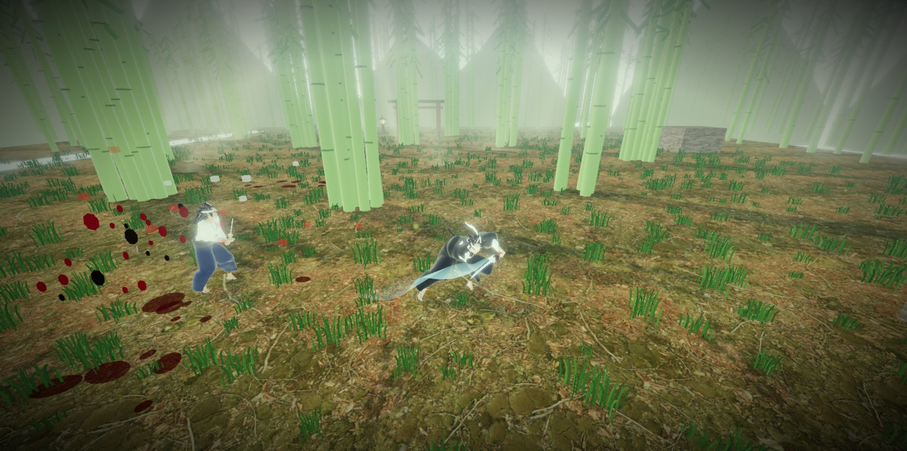
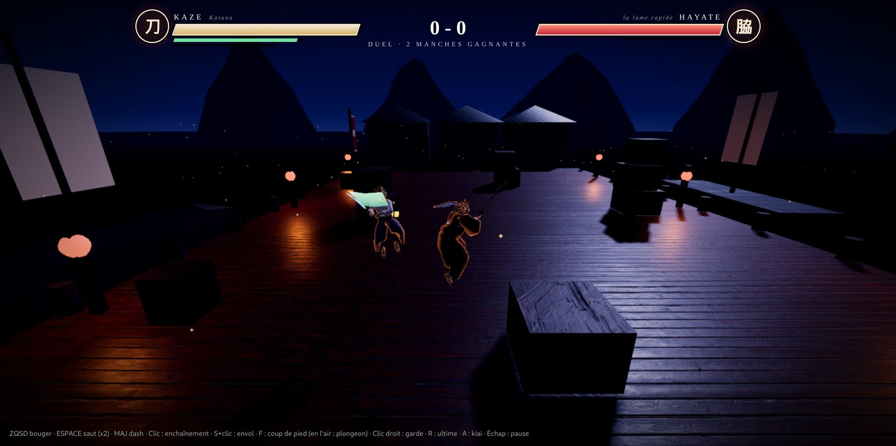
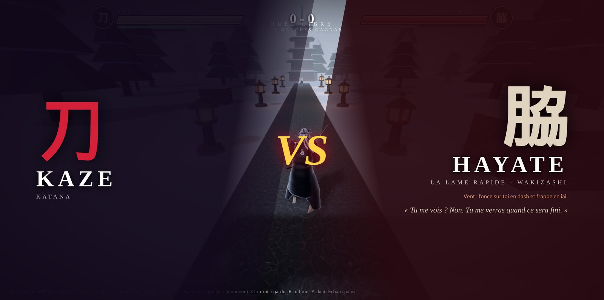
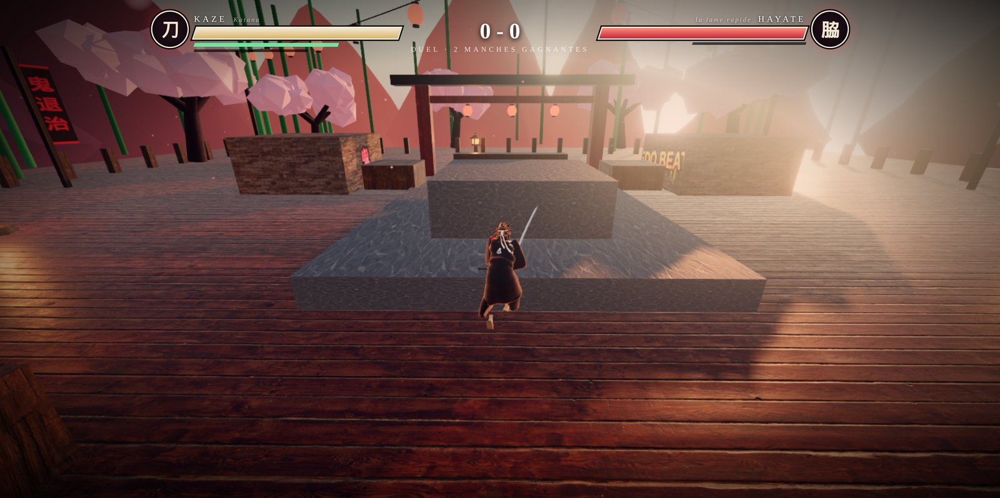

Samouraï · Arène · Katana
Un duel au sabre nerveux : enchaînements, esquives, courses sur les murs, parades au millimètre. Affronte sept maîtres en mode histoire ou défie tes amis en ligne.
Gratuit · pas de compte · se met à jour tout seul. Comment l'installer ?
Enchaînements, coups lourds, envols, plongeons, garde, parades et contre-attaques kaeshi.
Dash, double saut, course sur les murs : l'arène entière est ton terrain de jeu.
Sept chapitres, sept adversaires avec chacun sa technique, jusqu'au maître sans nom.
Crée un salon, donne le code à 4 lettres à ton ami, et que le meilleur gagne.
Dojo au crépuscule, toits d'Edo, bambouseraie, pont sous la pluie, temple enneigé, port de nuit.
Sabres, tenues, couleurs, silhouettes : personnalise ton combattant au casier.




chmod +x Zan-Duel-Linux.AppImagesudo apt install libfuse2t64 (ou libfuse2 sur les anciennes versions).Le jeu se met à jour tout seul, en entier : chaque nouvelle version remplace l'ancienne, tu n'as jamais besoin de le retélécharger. Un bandeau « Redémarrer le jeu » apparaît quand une nouvelle version est prête, sinon elle s'installe au lancement suivant. un bandeau « Redémarrer le jeu » apparaît quand une nouvelle version est prête. Chaque mise à jour est signée numériquement ; le jeu refuse tout fichier qui ne vient pas de son créateur.
| Z Q S D | Se déplacer (modifiable dans les options) |
| Espace | Sauter (deux fois pour un double saut, contre un mur pour courir dessus) |
| Maj | Dash |
| Clic gauche | Enchaînement · avec S : envol · en l'air vers l'avant : plongeon tsubame |
| Clic droit | Garde · au bon moment : parade |
| F | Coup de pied · en l'air : plongeon · en garde : contre kaeshi |
| A · R | Kiai (onde de choc) · Ultime quand la jauge de ki est pleine |
| Échap · F11 | Pause · plein écran |
Création : Raphael. Moteur 3D three.js (MIT), application Electron (MIT).
Musiques : « Big Mojo » et « Ishikari Lore » — Kevin MacLeod (incompetech.com), licence CC BY 4.0 · pickentcode et omfgdude — CC0.
Bruitages : « Fleshy Fight Sounds » — will_leamon, licence OGA-BY 3.0 · « Medieval sound effects – Weapon impacts » — Ben Jaszczak & Brian Nelson, CC0 · StarNinjas, Kenney, artisticdude, pyranostudios, qubodup, EZduzziteh, Marwan Antonios — CC0 (via OpenGameArt).
Graphismes : textures Poly Haven (CC0), animations Mixamo.